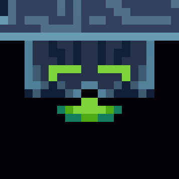
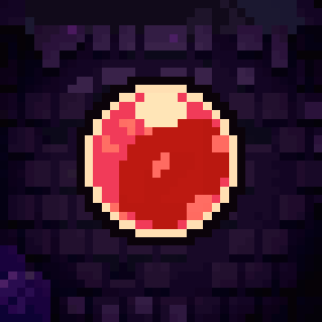

Lüliti, mida saab aktiveerida läbi selle sisse söösta või kui mängija viskab midagi selle sisse. Seda saavad ka aktiveerida mõned vaenlased, läbi puudutuse.
Mäeküljel asuv iidne tempel peidab endas kohutavat väge. Madeline siseneb sinna, et leida oma sõber, ning avastab, mis peitub tema enda südames.

Lüliti, mida saab aktiveerida läbi selle sisse söösta või kui mängija viskab midagi selle sisse. Seda saavad ka aktiveerida mõned vaenlased, läbi puudutuse.

Punane mull, mis laseb mängijal enda sisse hüpata. Kui mängija on mulli sees, siis olenevalt mis suunas mängija lükkab, hakkab mul liikuma. Mulli suunda ei saa muuta kui see on liikuma hakanud. Mullist saab lahkuda sööstades või kui see läheb seina pihta.